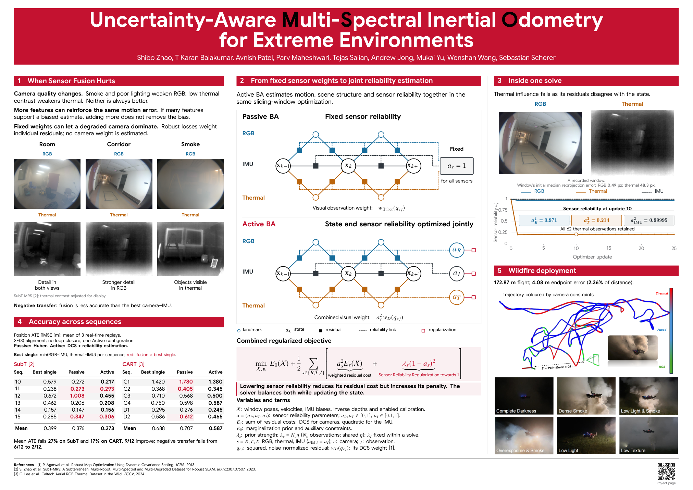

MSO jointly estimates motion, scene structure and sensor reliability from RGB, thermal and inertial measurements.
SubT demonstration
Four minutes of recorded RGB–thermal–inertial odometry.
The recording shows the map, camera feature tracks and sensor reliability during a SubT run.
Research poster
Method, sequence-level evaluation and wildfire deployment.

Open the poster PDF to zoom or downloadA0 landscape poster. Download the PDF for full-resolution viewing or printing.